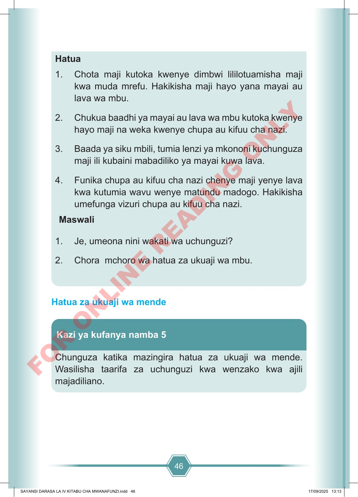

46 Hatua 1. Chota maji kutoka kwenye dimbwi lililotuamisha maji kwa muda mrefu. Hakikisha maji hayo yana mayai au lava wa mbu. 2. Chukua baadhi ya mayai au lava wa mbu kutoka kwenye hayo maji na weka kwenye chupa au kifuu cha nazi. 3. Baada ya siku mbili, tumia lenzi ya mkononi kuchunguza maji ili kubaini mabadiliko ya mayai kuwa lava. 4. Funika chupa au kifuu cha nazi chenye maji yenye lava kwa kutumia wavu wenye matundu madogo. Hakikisha umefunga vizuri chupa au kifuu cha nazi. Maswali 1. Je, umeona nini wakati wa uchunguzi? 2. Chora mchoro wa hatua za ukuaji wa mbu. Hatua za ukuaji wa mende Chunguza katika mazingira hatua za ukuaji wa mende. Wasilisha taarifa za uchunguzi kwa wenzako kwa ajili majadiliano. Kazi ya kufanya namba 5 SAYANSI DARASA LA IV KITABU CHA MWANAFUNZI.indd 46 SAYANSI DARASA LA IV KITABU CHA MWANAFUNZI.indd 46 17/09/2025 13:13 17/09/2025 13:13 F O R O N L I N E R E A D I N G O N L Y